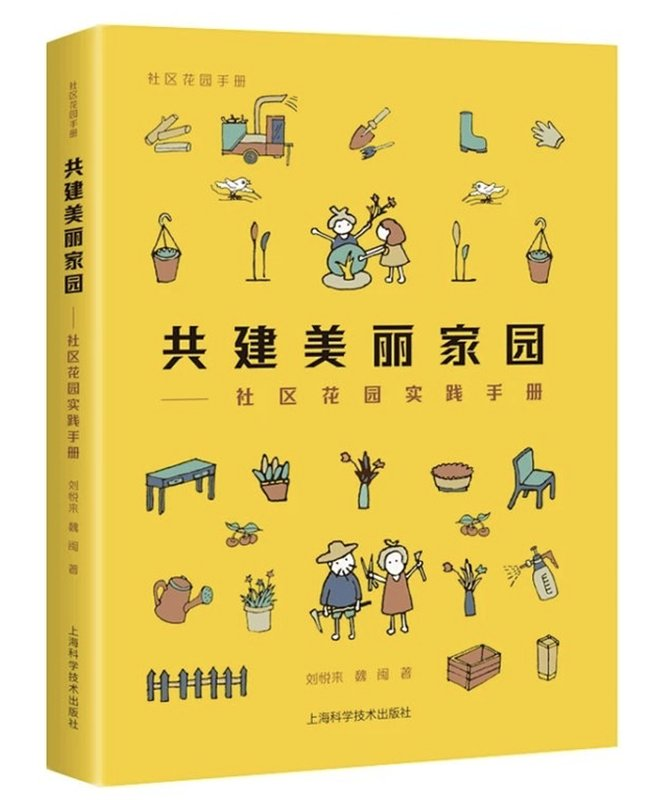
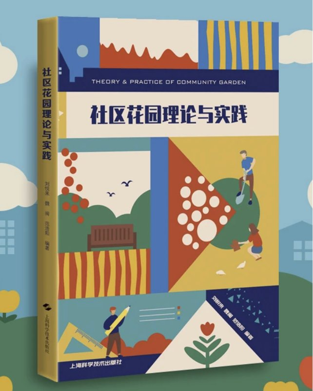
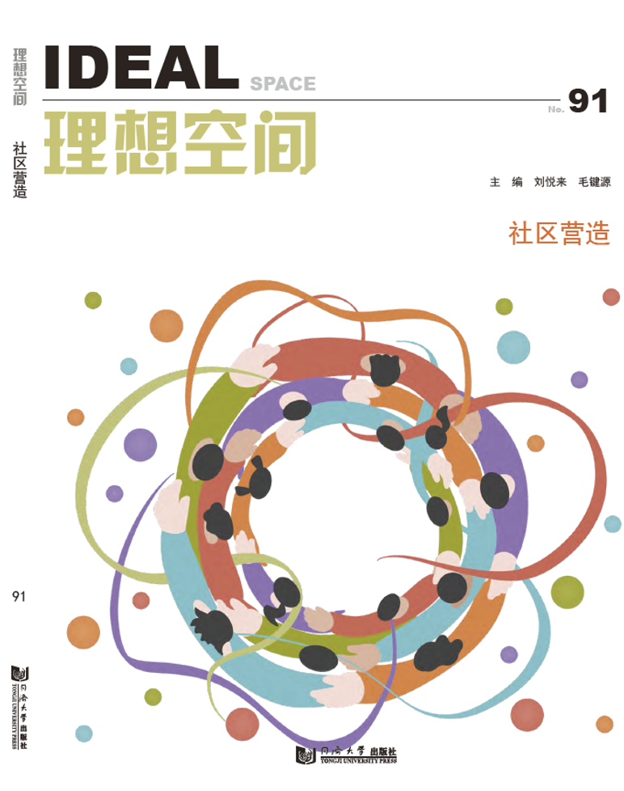

学术出版

共建美丽家园

社区花园理论与实践

重建附近

从社区花园到社区营造，探索城市更新的可持续发展路径
社区花园不止是一片绿地。它是由民众共建共享的开放空间，是社区营造的绿色起点，更是培育市民公共精神的鲜活场域。社区花园是一个"24小时×365天"都存在于居民身边的强关联载体，与日常生活紧密相连。
社区花园的参与门槛极低——"一把种子就可以开始"，这使得广泛的居民都能轻松参与。无论年龄、职业、背景如何，每个人都可以在花园中找到自己的位置。
社区花园又极其厚重，因为它必然触及公共空间——一旦涉及到公共空间就会涉及到权利、利益相关、分配，成为居民提升参与社区公共治理的天然成长通道。
世界各地文明中普遍存在着共享公共种植用地、由民众自主耕种，以实现资源共享、土地利用最大化与赋权民众的空间形式与文化思想。
19世纪工业革命时期，欧洲国家以"份地花园"的形式给予民众土地用于种植，解决社会问题。进入20世纪，欧美各国开始鼓励民众在后院、公园和其他空地上种植蔬菜以实现社会稳定和民众自救。
20世纪70年代，出现了社区基层居民或组织自发清理废弃地块改造为花园的行动。这些行动不仅是为了景观更新与农作物产出，更有着通过花园形式实现社区自助和民众权益争取的作用，现代社区花园概念形成。
中国社区花园是西方社区花园实践与中国自古以来的土地伦理、生活理想和"共享"理念的结合。延续了中华民族惜地的本能意识和自发实践、中国人对田园生活理想追求的内涵，中国园林自古体现的共享传统。
"最初500米"其实是要把生活变得稍微不愉快一点"
社区花园同时具有强烈的内在性（可以从内到外发力）和外在性（从外面撬动、激发内在力量），这使得这一系列项目对社会修复具有理论和方法论意义。 — 项飙 马克斯·普朗克社会人类学研究所所长
社区花园为人民、与人民、由人民 For the People, With the People, By the People
我们致力于推动社区治理模式的根本性转型，即从传统的"为居民服务"（work for），转变为"与居民合作"（work with），最终目标都是培育人民的主体性（by people）。搭建平台让居民自己发现问题、提出方案、动手解决，成为社区真正的主人。这些理念与方法在不同类型的项目中得到了生动的实践与验证。
由四叶草堂主办的"从社区花园出发，公众参与社区治理的可持续之路"主题媒体沙龙与项目探访活动在上海开展。十余位媒体记者和政府、专家学者、社会组织及社区自组织代表齐聚一堂，以四叶草堂多年来基于花园空间营造的社区治理空间建设为案例，聚焦在地社区的参与行动及其可持续性，分享方法与经验，探讨如何应对挑战。